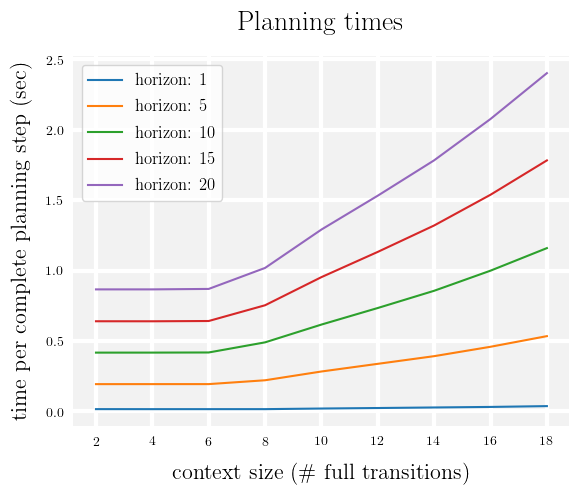

Time Benchmarking

The time required for one complete planning step of the trajectory optimizer for various horizons and Transformer context windows on the Hopper benchmark on a single RTX 2080 Ti GPU.
The minimum required context window is two full transitions (so that the model can attend to the entire previous state and action when predicting the next state).
We did not find any empirical performance gains from increasing the context window beyond 5 full transitions (see planning hyperparameters here), but show larger contexts for reference.
For the hyperparameters used in our planning method (horizon: 10, context: 5), each step takes approximately 0.4 seconds.
The number of transitions fitting in a 512-token sequence is
$\frac{512}{\text{observation dim + action dim + reward dim + reward-to-go dim}} = \frac{512}{11 ~+~ 3 ~+~ 1 ~+~ 1} = 16$, so the contexts shown do not risk running out of GPU memory.